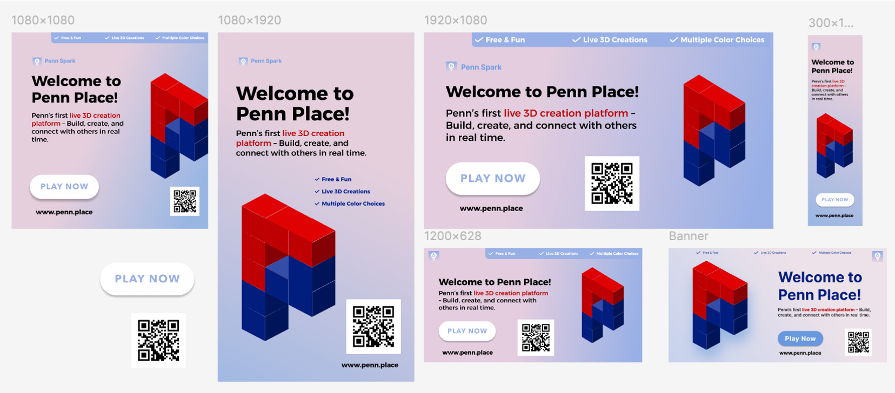

Penn Place
MuseoGo is an AI-driven museum education application providing engaging and personalized museum learning experience, including itinerary planning, AI companion, gamified quizzes and exit ticket, etc.
My role
Product Designer
Graphic Designer
My contribution
Ideation
Wireframe
Prototype
Graphic design
Timeline
Sept 2024 - Dec 2024
Team members
2 Project Managers
2 Product Designers
3 Developers
Overview
Problem statement
As 3D models continue to grow in popularity, the process of creating them remains complex, requiring significant expertise and specialized skills. Additionally, many 3D construction software platforms, such as Blender and SketchUp, lack support for real-time collaborative editing. Our team aims to make 3D construction more accessible and enjoyable for users of all skill levels, enabling them to collaborate seamlessly and create in real time.
1. How might we make 3D construction easy and accessible for users of all skill levels?
2. How might we enable users to collaborate seamlessly and create in real time?
Solutions
Build Mode
In 'Build Mode' , users can select colors and place cubes to construct their models.
Move Mode
In 'Move Mode', users can navigate the models from different views, as well as zoom in and zoom out using the mouse and keyboard.
Real-time Collaboration
All the users are building on the same interface, viewing other's masterpiece and collaborating for fun.
Impact
After release, we gained over 370 users and attracted more than 32000 times of interactions, winning the 'Best Project' of the Penn Spark.
Design
Highlight 1: Alternative interation methods
For the same interaction, we allow users to complete the action using either the keyboard or mouse independently, accommodating different user preferences and device contexts.
Move

Mouse: Press to navigate the view of the model

Keyboard: Use the Up, Down, Left, and Right arrow keys to navigate
Zoom

Mouse: Use the Zoom In and Zoom Out buttons to zoom

Keyboard: Touch the panel to zoom
Highlight 2: Simplied user flow after testing
After testing, we simplified the user flow by automatically switching to 'Build Mode' when users click on the color palette while in 'Move Mode'. Our research showed that once users finish viewing the model and intend to continue building, it's intuitive for them to select a color directly, rather than manually switching modes. This refinement significantly reduces interaction cost and enhances the overall experience.

Before: Finish the viewing → Switch the mode manually → Choose the color → Continue building

After: Finish the viewing → Choose the color (mode switched automatically) → Continue building
Highlight 3: Responsive design on mobile devices
We designed the interface to be responsive on mobile devices, ensuring that users can easily navigate and interact with the 3D models using touch gestures. This design choice enhances accessibility and usability, allowing users to engage with the application seamlessly across different devices.

The main page on the mobile devices to build and view the 3D models

The color pallete is on a seperate page considering the screen size
We recommend users to use the laptop because it can provide the best user experience
Highlight 4: Marketing graphic design
I designed marketing materials in various formats for our product, including posters, flyers, and banners. These were shared on social media and distributed on campus to attract more users and increase product engagement.
Conclusion
Penn Place is a creative project designed to make 3D construction more accessible for beginners. In some ways, it’s like a simplified Minecraft for live, collaborative creation. Users love it because they can build together on the same model or remix others’ creations just for fun. Their creativity and enthusiasm for 3D building shine through—and often spark deeper exploration in this space. I’m grateful to be part of a talented team of designers and developers, collaborating to brainstorm, iterate, and experiment with the product.
Key takeaways
- Don’t be Afraid to Explore New Fields: Few team members had prior experience in designing or developing 3D construction tools, but that didn’t stop us from making it work. Through regular brainstorming sessions and problem-solving, we turned a rough idea into a feasible and functional product.
- Cross-functional Collaboration is Essential: Building our product required close collaboration across design and development. Interaction design needed to be both user-friendly and technically feasible, so we worked closely as a team to iterate together and ensure our design decisions were practical and implementable.
- Accessibility Brings More Users in: Initially, our product was designed for computers, as building 3D models is more intuitive on a larger screen with a mouse and keyboard. However, before launch, we also created a mobile-friendly version. We realized that most users would discover our product by scanning posters with their phones, so it was crucial they could access it instantly—and transition to desktop later if needed.